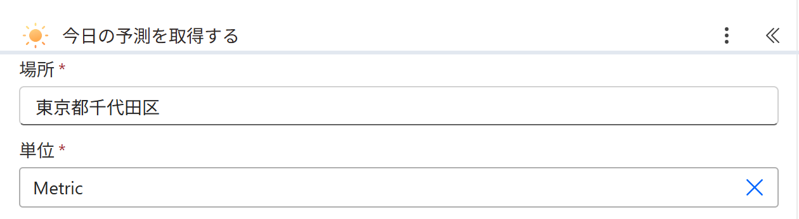
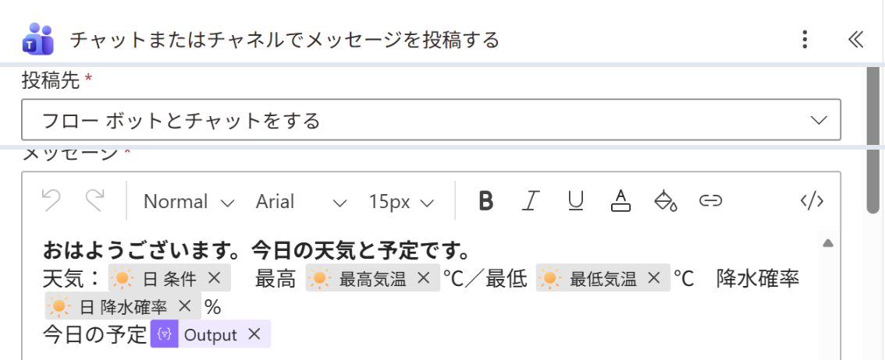

Vol.145-4
要の設定は場所と本文の4つの値

天気の値は、動的コンテンツで日 条件・最高気温・最低気温・日 降水確率を選ぶと日本語の名前で並びます。
予定の表は「HTML テーブルの作成」の Output をそのまま差し込みます
予定の表は「HTML テーブルの作成」の Output をそのまま差し込みます
 今日の予測を取得する実画面
今日の予測を取得する実画面
A
B
A
場所は住所の言葉そのまま。東京都千代田区で通る
B
単位は Metric（℃）。Imperial にすると °F で返る

C
D
C
投稿先 フロー ボットとチャットをする＝自分だけに届く
D
天気の欄は日 条件・最高気温・最低気温・日 降水確率を選ぶ
宛先をチャネルにすると、チーム全員の朝の連絡にも使える
出典：Microsoft Learn